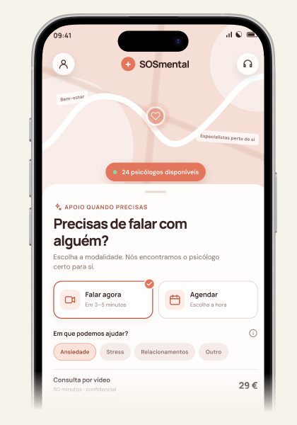

Escolha a modalidade que queres
Podes escolher psicólogos especializados ou encontrar os que estão disponíveis no momento.
Uma conversa pode mudar o teu dia. Encontra um psicólogo e faz a consulta por videochamada na hora que precisas.

Nunca sabemos como corre o dia e como as nossas emoções podem mudar. O SOS Mental oferece um espaço seguro onde pode falar sem julgamentos e sem pressão sobre os problemas que enfrenta.
Saiba mais sobre nós ↗Podes escolher psicólogos especializados ou encontrar os que estão disponíveis no momento.
Não precisas de perder tempo em transportes, o psicólogo está pronto para falar contigo apenas com um click.
Entra na chamada pelo telemóvel e dá espaço ao que sentes.
Não precisas de ter tudo
resolvido para começar.
— A tua saúde mental merece tempo, atenção e cuidado.
O apoio que procuras pode estar a uma chamada de distância.